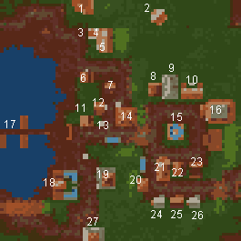

| 1 | Skills: Duelists' Edge (trains in Mace, Bow, Chain, Shield and Bodybuilding) |
| 2 | Town Fire Tower |
| 3 | NPC: +8 points to disarm trap skill, -1 reputation category and costs nothing |
| 4 | Buccaneers' Lair Open: 6:00pm - 6:00am |
| 5 | Expert Leather Armor Training, Bucaneer's Lair Membership |
| 6 | Expert Repair |
| 7 | Expert Spear Training |
| 8 | Armor: Armor Emporium |
| 9 | Weapons: Arm's Length Spear Shop |
| 10 | Trainer: Island Testing Center only trains up to level 32 |
| 11 | NPC: +5 perception, +10 luck and takes 4% gold |
| 12 | Expert: Staff Defense |
| 13 | Fountain: +20 Luck boost |
| 14 | Tavern: The Imp Slapper fills for 12 days |
| 15 | Fountain: +10 spell points regeneration |
| 16 | Temple: Mist Island Temple basic cost: 20 gold |
| 17 | Docks: Adventure [Travel Schedule] |
| 18 | Initiate Guild of Water |
| 19 | Initiate Guild of Air |
| 20 | Master Meditation |
| 21 | Bank: The Reserves |
| 22 | General Store: Lock, Stock, and Barrel |
| 23 | General Store: Witch's Brew |
| 24 | Master of Water |
| 25 | Master of Air |
| 26 | Master of Fire |
| 27 | Initiate Guild of Fire |
Leave us a message at: mgrounds@hotmail.com